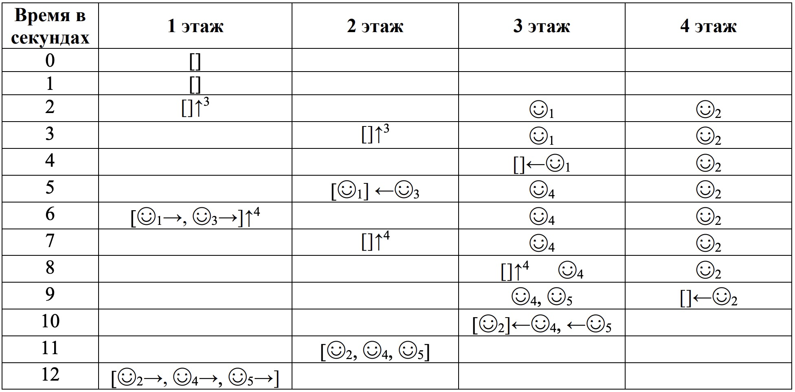
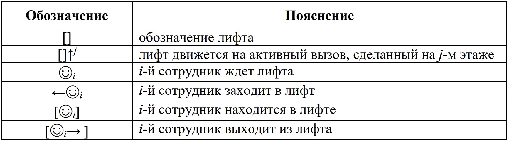

Golang-разработчик
Что делать
- Публикуй ответы на GitHub/GitLab/etc в любом удобном виде.
- Присылай свое резюме и ссылку на решение hr@bi.zone с пометкой «OFFZONE 2019 Go»
- Мы выбираем самые интересные решения — победителей ждут билеты на OFFZONE 2019 и подарки.
- На конференции подходи к стойке BI.ZONE.
- По результатам общения сможешь присоединиться к нашей команде!
Кому будет интересно
Go-разработчикам, которые:
- интересуются информационной безопасностью и особенностями работы различных операционных систем;
- имеют опыт проектирования и реализации распределенных клиент-серверных систем;
- работали с SQL/NoSQL;
- понимают принципы и протоколы сетевого взаимодействия.
Задача 1
Получить математически корректное выражение.
Использовать + - * / () ^
Задания:
67 65 1 1
5 29 0.1724137931034483
50 4 54 0.8620689655172413
5 3 4 1 3 9 1 5 -0.2597402597402597
21. 45. 20.0 77 76. 5.9 2.0 5. 19.85
7 68 6.8 0.27 66 .4 53 8 -44.30042369081779
70 5 .9 55 7.97 82 76 6 -0.30446409080986686
.2 74.4 4.5 583. 24.8 95 3 5 -69823.41999999998
74 8.5 6. 89.7 64 .6 8 .29 -571.73
Пример
5 4 2 -1
5-4-2
85 23 3.6956521739130435
85/23
36 3 47 1800
36*(3+47)
Задача 2
Имеется архив.
- Нужно найти минимальную комбинацию подстрок, объединение (склеивание) которых дает строку.
- Если найдено более одной такой (минимальной) комбинации, нужно выбрать ту из них, которая имеет более длинные подстроки в начале.
- Ответом является последовательность номеров подстрок (разделитель ",").
Пример
Строка: 123456
Нумерованные построки (id,code):
1,4
2,6
3,12
4,34
5,56
6,45
7,123
Возможные комбинации подстрок:
12-34-56
123-45-6
123-4-56
Решение (подстроки): 123 + 45 + 6
Ответ: 7,6,2
Задача 3
В современном многоэтажном офисе крупной компании установлен новый лифт. В компании работает n сотрудников. Для проверки эффективности системы управления лифтом требуется провести моделирование его работы в конце рабочего дня, когда все сотрудники должны покинуть здание и спуститься на первый этаж.
В здании m этажей, пронумерованных от 1 до m снизу вверх. Известно, что i-й сотрудник подходит к лифту в секунду ti на этаже ai, чтобы спуститься на первый этаж.
На каждом этаже могут находиться люди, ожидающие лифт. Когда очередной сотрудник подходит к лифту, он вызывает лифт, если на этом этаже лифт еще не вызван, либо присоединяется к ожидающим лифт. Таким образом, помимо вызвавшего лифт, вместе с ним лифт могут ожидать и другие сотрудники.
В каждый момент времени не более одного вызова является активным.
Изначально лифт свободен и находится на первом этаже. Когда поступает первый вызов, этот вызов становится активным и лифт отправляется на соответствующий этаж. Если несколько вызовов поступает одновременно, активным становится вызов от сотрудника с меньшим номером. Лифт перемещается между этажами со скоростью один этаж в секунду. Когда лифт оказывается на этаже, откуда был сделан активный вызов, в него заходят все, кто уже ожидает лифт на этом этаже, и лифт отправляется вниз на первый этаж, со скоростью один этаж в секунду. При движении вниз лифт останавливается на тех этажах, с которых на момент проезда мимо этого этажа был сделан вызов. Все ожидающие лифт сотрудники заходят в него, и вызов на этом этаже сбрасывается. Когда лифт завершает движение на первом этаже, все люди выходят из лифта, а лифт ожидает следующего вызова.
Если в момент, когда лифт освободился, есть хотя бы один необслуженный вызов, активируется вызов, который поступил раньше других. Если несколько вызовов поступило одновременно, активируется вызов от сотрудника с меньшим номером. Лифт продолжает обслуживание описанным образом, пока все люди не окажутся на первом этаже. Будем считать, что люди входят и выходят из лифта мгновенно. Каждую секунду сначала люди подходят и вызывают лифт, а затем лифт выполняет свое действие (перемещается на соседний этаж, сажает или выпускает людей, принимает решение, на какой вызов отправиться). Требуется написать программу, которая по описанию вызовов лифта для каждого сотрудника определяет, в какой момент этот сотрудник окажется на первом этаже.
Входные данные
Первая строка входных данных содержит целые числа n и m — количество людей, вызывающих лифт, и количество этажей в здании (1 ≤ n ≤ 105, 2 ≤ m ≤ 109).
Следующие n строк описывают сотрудников, i-я из этих строк содержит два целых числа ti и ai — секунду, в которую i-й сотрудник подходит к лифту, и номер этажа, на котором это происходит (1 ≤ t1 ≤ t2 ≤... ≤ tn ≤ 109, 2 ≤ ai ≤ m).
Выходные данные
Выходные данные должны содержать n целых чисел, для каждого сотрудника требуется вывести секунду, в которую он выйдет из лифта на первом этаже.

